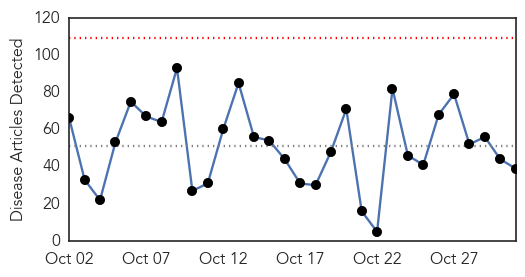
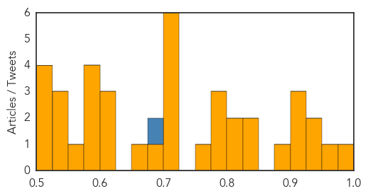
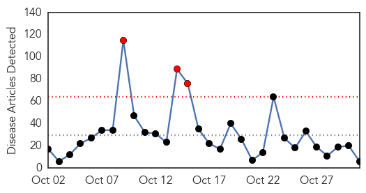
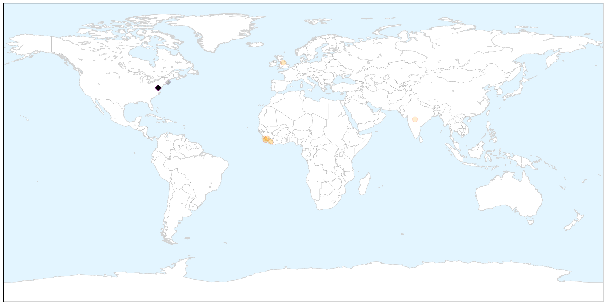
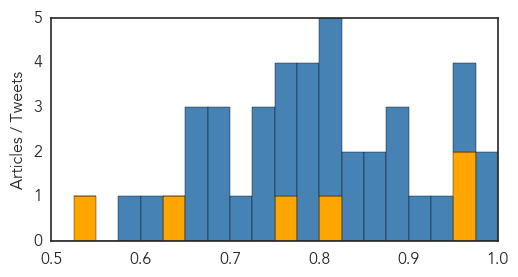

Unknown
30-Day Web Trend
0 alerts, 0 warnings

30-Day Twitter Trend
1 alerts, 0 warnings

Article Locations


Article Confidences
Top Articles:
- 0.994
- Public urged to get flu vaccine
- 0.954
- 93 Sick After Shigella Outbreak at California Restaurant
- 0.942
- At least 22 sick after eating Chipotle in Washington, Portland
- 0.940
- Bad Bacteria Found, Removed From Berlin High Water
- 0.910
- Legionnaires' Bacteria Found at Berlin High School
- 0.907
- Oregon, Washington probe E. coli cases linked to Chipotle
- 0.907
- Oregon, Washington probe E. coli cases linked to Chipotle
- 0.879
- E. coli sickens at least 22 people who ate at Chipotle in Oregon and Washington
- 0.840
- Indiana health officials report surge in syphilis cases
- 0.830
- Indiana Health Officials Report Surge in Indiana Syphilis Cases
- 0.822
- Deadly lyssavirus confirmed in Clermont flying fox
- 0.814
- Flu activity varies by region but vaccine timing is key
- 0.789
- Milk Makers Fest E. Coli O157:H7 Outbreak Final Report Released
- 0.789
- + Katholieke Actie Vlaanderen +: Danneels-Gate 43: Godfried 'kardinaal' Danneels in maart 2005 op het 'World Jewish Congress' om het aftreden van paus Johannes Paulus II te bedisselen...
- 0.786
- Matron’s plea to keep bugs at bay
- 0.768
- Chipotle Closes Some Restaurants in WA and OR Following E. Coli Outbreak
- 0.717
- Spokane Chipotle closed from NW E Coli. investigation
- 0.707
- US-backed Syrian rebels launch offensive against IS group
- 0.707
- Tens of thousands of Israelis attend Rabin memorial rally
- 0.707
- Russia rejects claim that IS group shot down aircraft
- 0.707
- Germany restricts migrant entry to five points on Austrian border
- 0.707
- ‘No survivors’ as Russian plane crashes in Egypt’s Sinai
- 0.679
- 40 E. coli cases in Northwest linked to Chipotle outbreak
- 0.653
- Doctors Medical Center in San Pablo Offering Free Drive Through Flu Shots
- 0.608
- Zimbabwean president stumbles, fuelling health speculation
- 0.606
- Doctors, Ministry of Health Saudi Arabia Jobs in Saudi Arabia
- 0.601
- Project Cuts Diarrhoeal Disease Infections By 30% In Malawi
- 0.593
- Zimbabwean president stumbles, fuelling health speculation
- 0.586
- Parents say 9-year-old paralyzed after flu shot
- 0.585
- Leprosy no longer a ‘life sentence’ thanks to modern medicine — Dr Jerip – BorneoPost Online
- 0.580
- Vermonters asked to take and share photo while taking flu vaccine
- 0.560
- More Culturally Aware Doctors Needed To Serve LGBTQ Community
- 0.548
- ‘Go for early cancer screening’
- 0.542
- Morphine Still Needed to Avert Pain – Medic
- 0.539
- 1.3 million Montrealers face boil water advisory
- 0.524
- College students lax about properly washing their hands, AsiaOne YourHealth News
- 0.519
- typhoid combo is ruling hospitals
- 0.505
- Research & Education Facility - Page 7 - SkyscraperCity
- 0.502
- Four staff sacked for storing and sharing child porn
Top Tweets:
- 0.695
- C'est un investissement important dans le développement des capacités propres de l'Afrique en vue de répondre aux urgences de santé. @RFI
Ebola
30-Day Web Trend
3 alerts, 0 warnings

30-Day Twitter Trend
16 alerts, 0 warnings

Article Locations

X

Article Confidences
Top Articles:
- 0.970
- Untitled Article
- 0.964
- Dozens of Sierra Leonean Medical Experts trained on Disease Control and Prevention in China
- 0.809
- UN reaffirms commitment to work closely with the people and the Government of Sierra Leone for realization of SDGs.
- 0.769
- EBOLA and the PLAGUE sprayed on spider webs by UK MoD
- 0.628
- Yeovilton sailors honoured for efforts in Ebola fight
- 0.549
- Sierra Leone and India to increase bilateral cooperation
Top Tweets:
- 0.987
- Former Richland Woman Recounts Tracking the Ebola Virus in Sierra Leone - https://t.co/Hi9Gsr7BOb ebola
- 0.982
- Former Richland Woman Recounts Tracking the Ebola Virus in Sierra Leone - NBC Right Now https://t.co/3HWrtv4A5i ebola EVD
- 0.959
- Is Ebola a Virus or Bacteria? - https://t.co/85GdTjTSYH ebola
- 0.958
- Deforestation 'may have started west Africa's Ebola outbreak' - https://t.co/80eVyoI1sL ebola
- 0.928
- Penn Study Blocks Ebola Virus Budding by Regulating Calcium Signaling - https://t.co/RNMEZaJN6D ebola
- 0.904
- Blocking calcium-signaling pathway could inhibit Ebola virus and other sources ... - News-Medica https://t.co/HTdjxfTGy2 ebola EVD
- 0.888
- Former Richland Woman Recounts Tracking the Ebola Virus in Sierra Leone - NBC Right Now https://t.co/q0eL92IiAk
- 0.882
- Making Sense of the Outbreak: Henry 'Amaze' Toe's Back-Kick to Ebola - https://t.co/Etn7nYmkGd ebola
- 0.879
- Three new cases of Ebola recorded in Guinea - https://t.co/pFhSjExHki ebola
- 0.868
- ebola hahaha!! - https://t.co/fjt9AgYqyv ebola
- 0.868
- Xpert Ebola - https://t.co/n0DBzaCiX2 ebola
- 0.843
- ebola crisis - https://t.co/JodKe5Xk2p ebola
- 0.840
- Emory Ebola - https://t.co/Abtwy4wW6x ebola
- 0.813
- Christie and Ebola nurse face hurdles in quarantine lawsuit - https://t.co/KU5UvjAh6Z ebola
- 0.809
- Ebola case confirmed in Nashville TN - https://t.co/BVyA1uRziT ebola
- 0.803
- Veigar is some ebola for champ select - https://t.co/w7Rw35yenZ ebola
- 0.803
- MoD test lifespan of deadly diseases ebola and the black death using spiders - https://t.co/VfxJh35qqP ebola
- 0.794
- Religion and Ebola: Learning from experience - https://t.co/cch7vSozrm ebola
- 0.793
- Ebola w/ uncle dubsmash Annoyu drunk - https://t.co/PSX0qhvODV ebola
- 0.792
- The Politics Behind the Ebola Crisis - Newsweek https://t.co/pbUsdZ6le0 ebola EVD
- 0.787
- Spider webs with Ebola and the Plague - https://t.co/OZysTSdWG1 ebola
- 0.774
- Nat Geo's 'Breakthrough' kicks off with look at ebola USAMRID and pandemic risks - https://t.co/kAhGqOVKLU ebola
- 0.763
- Ministry of Defence use spiders to test the lifespan of ebola - https://t.co/gyOGDYbIEx ebola
- 0.753
- MoD to use spiders to test lifespan of weaponised Ebola and Black Death - https://t.co/K2AFP5jWg4 ebola
- 0.741
- MoD to use spiders to test lifespan of weaponised Ebola and Black Death - Western Morning News https://t.co/8fC9BuvlF5 ebola EVD
- 0.726
- Yeovilton sailors honoured for efforts in Ebola fight - https://t.co/iToMbLRz4x ebola
- 0.725
- [Editorial] Ebola: forgotten but not gone? - https://t.co/nhm6hNFwPn ebola
- 0.705
- IOM launches second phase of Ebola Free Ghana - GhanaWeb https://t.co/nfdaoVGr8J ebola EVD
- 0.692
- Combating Ebola: Cameroon listed for clinical trials - https://t.co/npBa1qr20I ebola
- 0.689
- This is Not a Drill – Biocontainment and Ebola - https://t.co/HP5bMti1yN ebola
- 0.686
- Impact of bed capacity on spatiotemporal shifts in Ebola transmission - https://t.co/Wx9W7Tc2U3 ebola
- 0.665
- Ebola 'Team B' model could serve more broadly its members say - https://t.co/D6wPELlngF ebola
- 0.665
- Ebola 'Team B' model could serve more broadly its members say - https://t.co/0v8NjMYKQ2 ebola
- 0.664
- October 30th 2015 UWI Ebola Lecture - https://t.co/As9NyImN9q ebola
- 0.620
- Thai scientists looked for evidence of Ebola virus in bats and macaques. Got no positive hits. https://t.co/Z4shd5eqBD
- 0.587
- Global nurse to share experiences from Sudan Sierra Leone Afghanistan - https://t.co/9RXVljfyRP ebola